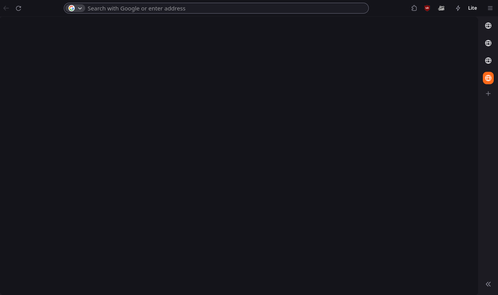

Open the web on a bad connection.
Blaze is a Firefox-based browser built for speed and a light footprint. It downloads less for every page, remembers where a download stopped, and comes with uBlock Origin, Privacy Badger, a cookie-notice blocker and Bitwarden.
Blaze is in alpha and runs on Linux (x86_64). The current release is 0.1.3 (alpha software). You can also build it from source: the steps are in the README.
Flat, compact and two-toned


Captured from a real Blaze window. Only the browser interface is shown; the page area is empty because of how the screenshots are taken.
What you get
- Lite mode
- One switch at the top right stops images, web fonts and video from loading. On heavy news pages that saved 44% to 61% of the bytes.
- Downloads that resume
- The download engine splits a file over several connections and carries on after a crash, a power cut or a dropped link. Today it runs from the command line and fetches Blaze's own components. Hooking it into the browser's download button is the next milestone.
- Your extensions
- uBlock Origin, Privacy Badger, I Still Don't Care About Cookies and Bitwarden come installed and tucked into one menu, so the toolbar stays clean. Anything else from addons.mozilla.org installs the usual way.
- Spotify and Netflix work
- Widevine is on by default. If you would rather not contact Google's servers for it, turn it off with one setting.
- Private by default
- No telemetry, no accounts, HTTPS-only, strict tracking protection. We measured every server Blaze contacts and list them all. Read PRIVACY.md
- Updates you decide
- Blaze checks GitHub once a day, shows you what changed in the new version, and downloads it only if you say yes. Releases are signed, and Blaze refuses an update that is not.
- A Firefox that stays put
- Blaze ships a specific, tested Firefox and switches off Firefox's own updater, so a Firefox update cannot break the interface. New Firefox versions arrive inside Blaze releases.
- Small on disk, light on memory
- The Blaze app is under 5 MB. In our tests it used 27% to 36% less memory than Firefox as shipped, with the same pages open.
The numbers, and where they stop
Each figure is one run on one machine. Treat them as a direction, not a promise.
| Scenario | Firefox | Blaze | Difference |
|---|---|---|---|
| One blank tab | 815 MB | 522 MB | 36% less |
| One tab, Wikipedia | 878 MB | 637 MB | 27% less |
| Four pages at once | 1021 MB | 689 MB | 33% less |
Blaze is still Firefox. A tab playing video costs what a tab playing video costs, and about 500 MB for one tab is the floor we found with this engine. We cannot honestly say Blaze is the lightest browser there is: we only measured Firefox, and tiny browsers that skip the modern web will always use less.
The first start is not light. Blaze downloads Firefox once (87 MB, verified against a published checksum), the four extensions come to about 38 MB (Bitwarden alone is 28), and Firefox then fetches about 49 MB in the background: Mozilla's data and blocklists 26 MB, Widevine 17 MB and Safe Browsing lists 6.5 MB. Around 175 MB the first time, and all of it can resume if the link drops.
Install
- Download the AppImage from the Releases page. It is signed; the README shows how to verify it.
- Make it executable and run it.
chmod +x Blaze-*-x86_64.AppImage ./Blaze-*-x86_64.AppImage - Wait for the first start. Blaze fetches and verifies its Firefox. Close it halfway and it picks up where it left off.
Prefer to build it yourself? You need the .NET 10 SDK; the README lists the exact commands.